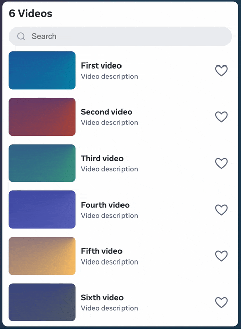

I like React. I really do. It is the default answer for modern web development, and it is that answer for a reason. Generally when React adds a feature it is well thought through, within the React system of thinking. My one criticism is that React by its nature overthinks things, that dumber and simpler solutions would often be on the whole ... better. Less magic, more predictable.
So when I port framework features to vanilla JS, don't take this as a slight of that framework. It is meant as an exploration of what dumber and simpler solutions might look like, when built on the ground floor of the web's platform instead of the lofty altitudes of big frameworks. It is a great way to learn.
Which brings me of course to today's topic: view transitions, and how to implement them.
View Transitions 101
Let's start with the basics: what is a view transition?
In a supporting browser, what you'll see when you click is a square smoothly transitioning between blue and orange on every button click. By supported browser I mean Chrome, Edge or Safari, but sadly not yet Firefox, although they're working on it! In Firefox you'll see the change, but applied immediately without the animation.
At the code level, it looks something like this:
How this works is that the browser takes a snapshot of the page when we call document.startViewTransition(),
takes another snapshot after the callback passed to it is done (or the promise it returns fulfills),
and then figures out how to smoothly animate between the two snapshots, using a fade by default.
A very nice thing is that by putting a view-transition-name style on an element we can
make it transition independently from the rest of the page, and we can control that transition through CSS.
Now we can see a second square sliding in on the first click, and fading out on the second.
That's enough view transition basics for now. If you're curious for more, you can learn the rest in the chrome developer documentation.
Here comes trouble
Up to this point, we've gotten the fair weather version of view transitions, but there are paper cuts.
- Firefox doesn't support view transitions at all, so we have to feature-detect.
- There is only one actual current View Transitions standard, level 1, but most of the online tutorials talk about the unfinalized level 2.
- If there are duplicate values of
view-transition-nameanywhere on the page, the animations disappear in a puff of duplicate element error smoke. - As always, there's a thing about shadow DOM, but more on that later.
- Starting a new view transition when one is already running skips to the end of the previous one, bringing the smooth user experience to a jarring end.
- User input is blocked while the view is transitioning, causing frustration when clicks are ignored.
- The
document.startViewTransition()function only accepts a single callback that returns a single promise.
It is the last one that really spells trouble. In a larger single-page web application we'll typically
find a central routing layer that triggers a number of asynchronous updates every time the route changes.
Wrapping those asynchronous updates into a single promise can be a challenge,
as is finding the right place to "slot in" a call to document.startViewTransition().
Also, we probably don't even want to wait for all of the asynchronous updates to complete. Leaving the application in an interactive state in between two smaller view transitions is better than bundling it all together into one ponderous picture perfect transition animation.
What React did
React being React they solve those problems through magic, through exceeding cleverness. You can read up on their approach to view transitions, but distilling it down it becomes this:
- Anything that should take part separately in a view transition is wrapped in a
<ViewTransition>component. - React will choose unique
view-transition-namestyle values, which DOM elements to set them on, and when to set them. This can be controlled through the<ViewTransition>nameandkeyprops. - Any updates that should become part of a view transition are wrapped in a
startTransition()call. - React automatically figures out when to call
document.startViewTransition(), and what updates to put inside the callback. It also cleverly avoids starting new transitions when one is already running, sostartTransition()can be called from multiple places safely. Oh, and by the way, it feature detects, obviously.
When you do all of that, you get magic.
Good luck figuring out how it works, or how to troubleshoot when the magic loses its shine. But that is the bar, that is the lofty goal of user experience to reach with a dumber and simpler reimagining as vanilla JS. So let's get cooking.
A fresh start
Our starting point is a barebones implementation of a startTransition()
function to replace what React's startTransition() does.
It will fall back to non-animated transitions if our browser doesn't support document.startViewTransition.
While that takes care of feature-detecting, we can still run into timing issues. For example, let's say that instead of toggling we were switching routes, and the second route needs to load data prior to animating in.
So with HTML like this:
<p><button>Navigate</button></p>
<div id="route1" class="route"></div>
<div id="route2" class="route"></div>
We might intuitively choose to do something like this:
But, as you see when trying it out, it doesn't work. Because the startTransition()
calls end up overlapping each other, the animation is interrupted, and we get a jarring experience.
While this toy example can be made to work by tuning delays, in the real world those same delays are network-based, so there's no timing-based solution.
We also can't solve this by bundling everything into one single big view transition, because that would imply
blocking user input while a network request completes, which would be a bad user experience.
React solves all of this in the typical React way. It will smartly choose how to batch work
into successive calls to document.startViewTransition(). It will take into account where something loads lazily,
as in the previous example, and batch the work of animating in the content for the fallback in a separate view transition.
Taking a queue
Distilling that approach to its essence, the really useful part of React's solution is the queueing and batching of work.
Any call to startTransition() that occurs while a view transition is running should be queued until after the transition completes,
and nested calls should have all their updates batched together.
The QueueingViewTransition implementation is a straightforward batching of callbacks,
and a single call to document.startViewTransition() that executes them in order.
It is not included in the text of this article for brevity's sake, but linked at the bottom instead.
Applying that queueing solution on top of the previous example's unchanged code, we suddenly see the magic of clean view transitions between dynamically loading routes.
Back to the top
So as I was saying at the top, I like porting framework features to vanilla JS as a way of learning and exploring dumber and simpler solutions.
Which brings me to the playground for that learning, a full port of React's tour-de-force <ViewTransition> example to vanilla web code.
The full code of this example is on GitHub.
Arguably the 300 lines of code in the lib/ folder of that example constitute a mini-framework,
but fascinating to me is that you can get so much mileage out of such a small amount of library code,
with the resulting single-page application being more or less the same number of lines as the React original.
That example also shows how to do a purely client-side router with clean URLs using pushState().
This blog post has however gone too long already, so I'll leave that for another time.
One more thing
Oh yeah, I promised to talk about the thing with shadow DOM.
Here is the thing: when document.startViewTransition() is called from the light DOM,
it cannot see elements inside the shadow DOM that need to transition independently,
unless those elements are exposed as DOM parts and a view-transition-name style is set on them in the light DOM.
If the solution to that intrigues you, it's in the GitHub example repo as well. If that sounds like a bunch of mumbo jumbo instead, join the club. Just one more reason to avoid shadow DOM.